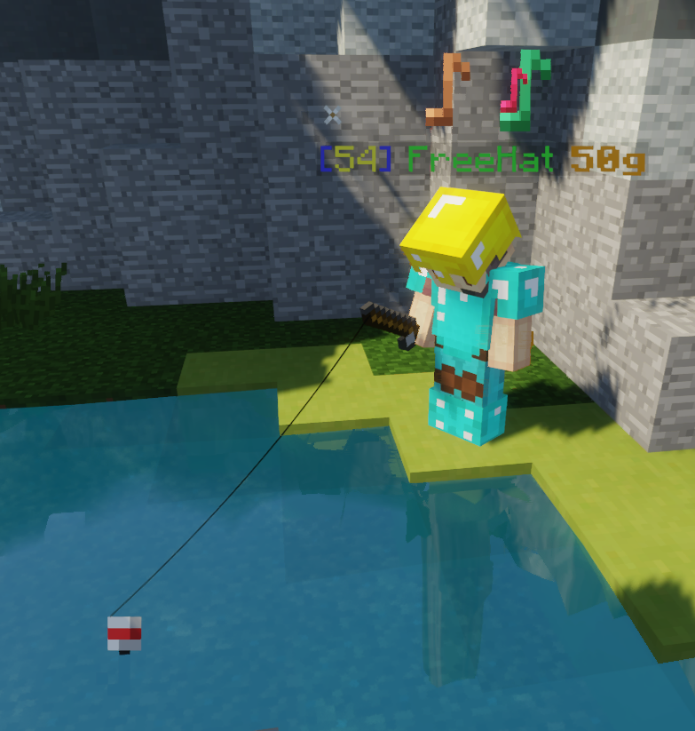

|  |
| A player fishing with Aqua Pants equipped. |
Fishing is an activity in The Pit. It is the only way to obtain certain items, such as Aqua Pants. Players can get fishing rods from the Fishing Rod perk or the Club Rod enchant on Aqua Pants.
Fishing can be done in any body of water, regardless of size.
When fishing without the Fishing Club renown upgrade, the following items can be obtained:
- 1 or 6 gold ingots
- Diamond swords
Fishing can be significantly upgraded with the Fishing Club renown upgrade, unlocked at prestige III. Each tier of Fishing Club grants a significant bonus to fishing.
- At Fishing Club I, the player can now actually catch fish from fishing:
- Kloonfish, granting 1.5♥︎[bug]The description of this item states that it should grant 2♥︎ of absorption instead of 1.5♥︎. of absorption
- Salmon, granting Regeneration III (0:03)
- At Fishing Club II, the player earns 25 XP in addition to everything they catch.
- At Fishing Club III, the player can now find diamond chestplates, leggings, and boots from fishing.
- At Fishing Club IV, the player catches items 20% faster.
- At Fishing Club V, the player has a very rare chance to catch Fresh Aqua Pants.
Trivia
- In the Genesis map, players can fish in the water columns in the spawn area.
- The Portable Pond mystic allows players to fish anywhere that blocks are placeable.
- When eating a fish, usually the title text "Nom nom!" appears on the player's screen. However, there is a rare chance it will say "Burp!" instead and the player will also receive Slowness V (0:02).
- Both salmon and kloonfish have nine different sizes: Nearly microscopic, Tiny, Small, Medium, Big, Large, X-Large, Massive, and Gargantuan. Fish sizes are cosmetic and appear as a prefix before the fish's name. Nearly microscopic and Gargantuan fish are extremely rare.
- At least one quadrant of each map is dedicated to fishing. These quadrants are Water on Elements, Port on Castle, Seaweed on Corals, Garden and Palace on Genesis, and Summer on Four Seasons.
- Fishing underground will approximately double the catch time, identically to vanilla Minecraft. For best results, one should ensure that the bobber has direct sky access.